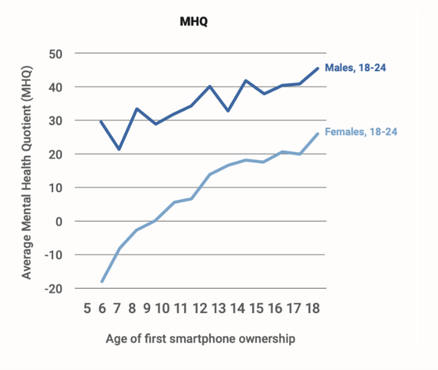

About mental health
Introduction
French
Il est très probable que beaucoup d’entre nous sommes coupable de surconsommation lorsqu’il s’agit d’un
produit qui nous apporte du réconfort. Que ce soit de la nourriture, des livres ou bien même des vêtements, il
y en a pour tous. Pour une grande partie de nous, nos dépendances peuvent sembler banales et inoffensives.
Cependant, pour certains, l’élément qui apporte du réconfort est malheureusement plus mauvais que bénéfique.
Les dépendances se trouvent donc à être le point central de ce projet et pour être plus précis ce sont le
sujet du cannabis et des appareils électroniques. En effet l’accroissement de l’utilisation
abusive de ses produits n’est pas un évènement récent. Ce phénomène, qui affecte en grande majorité les
jeunes, est bien plus sérieux qu’on pourrait le croire. Un facteur récurant dans la cause de ses dépendances
est le stress et l’anxiété. Les jeunes se referment sur eux-mêmes, ainsi, la consommation de
cannabis et d’appareils électroniques est un moyen de se détendre et de lâcher prise « In contrast, compulsive
disorders are characterized by anxiety and stress before committing a compulsive repetitive behavior and
relief from the stress by performing the compulsive behavior.» Il s’agit d’une distraction du monde réel
et de nos sources d’angoisse et de stresse. Avec l’augmentation d’utilisation de ses produits, il est
important d’être informé des risques et facteurs que la consommation entraine. Par conséquent, le but de ce
projet est de comprendre les motifs qui pousse les jeunes à consommer de façon excessive ces mécanismes de
soulagement pour ensuite sensibiliser les générations futures.
Koob, G., Volkow, N. Neurocircuitry of Addiction.
Neuropsychopharmacol 35, 217–238 (2010).
English
Many of us are guilty of overconsumption when it comes to feel-good products. Whether it’s food, books or even
clothing, everyone has a sweet spot. They may seem harmless to a lot of people but in the end, they do
more harm than good to the body. Addictions will be the backbone subject of this project, and more
precisely the addiction to cannabis and electronic devices. In fact, the rising abuse of these
products is not new. This youth targeted phenomenon is worse than people might think. Stress and anxiety are
usually the reasons that create these addictions. Young people tend to isolate themselves into their own world
and use cannabis and their technological devices to relax and let go. « In contrast, compulsive
disorders are characterized by anxiety and stress before committing a compulsive repetitive behavior and
relief from the stress by performing the compulsive behavior.» With this rising consumption, knowing the
risk of these products is important. Therefore, the final goal of this project is to understand what motivates
the youth to use these coping mechanisms and sensitize them.
Koob, G., Volkow, N. Neurocircuitry of Addiction.
Neuropsychopharmacol 35, 217–238 (2010).
As you continue reading, you will stumble upon questions regarding cannabis and screen addictions. To test your
knowledge on the subject, answer the questions in your head or on a piece of paper. After that, read the
paragraphs that follows the question to either confirm your answer or hopefully make you learn new information
about the topics.
Cannabis
Introduction
With marijuana being legalized in October 2018 and cannabis use increasing by 22% since then specially for people
between 18 and 24 years old, according to statistics Canada, it is important to be aware of what we put in our
body even if we might see it as less harmful because of its legalized status. This following text is going to
answer some questions you might ask yourself about this drug from covering what is cannabis to what are the
effects of pot? There is also going to have a testimony about an important topic that is psychosis. A
questionnaire will also be presenting at the end of this text to test your knowledge about this topic.
Before starting, as a reminder, cannabis has been legalized for three main reasons: to keep cannabis out of reach
of youth, to keep the profit out of the black market and at the same time make profit out of it and by finally
allowing adults to have access to legal cannabis which comes with the information of THC or CBD (Canada
statistics).
What is cannabis?
First, cannabis is in both in the stimulant and depressant category acting on the central nervous system.
Stimulants are drugs that change your energy levels by increasing it. They include cocaine, methamphetamine, and
prescriptions for ADHD. Depressants, on the other hand, come slow down your brain functions. Some sources like the
manual of psychopathology even put it in the hallucinogen psychotropic category because in high dose, it can
provoke light perception distortion such as hallucination. In the following topics, you are going to explore a bit
of the scientific side of substance consumption to be aware of how it can affect your brain.
Let’s talk biology!
1.Central nervous system
The central nervous system, different from the peripheric nervous that controls the transmissions, is composed
with the encephalon and the spinal cord. Responsible for the integration of information, decision-making and
motricity, it is in the brain where the drastic changes of activities are found when there is a psychotropic
substance entering the body. It is in the synapses which is the space between neurons that the neurotransmitters
are affected, and the signals perturbed.
2.Neurotransmitter
Neurotransmitters are chemical substance that carry messages from neuron to neuron or from neuron to muscle, cell,
or gland . A shift in how the neurotransmitter works by drugs can cause a difference in our thoughts, our mood and
sensation and sometimes the access to our memory.
3.Effect of a depressant like alcohol (comparison with cannabis)
For the purpose of your understanding better the how drugs can affect differently, the brain depending on which
one is in the equation, the comparison with alcohol is relevant.
One of the most used psychotropics worldwide, alcohol can be found in strong liquor such as vodka, beer, and wine
with the only difference: the percentage of ethanol, an organic compound made from the fermentation of
agricultural products . Even though more than half of the population drink alcohol according to Gallup News «More
than six Americans drink alcohol, » not many know the chemical factors that are in cause for that change in the
brain to be made. Here are some neurotransmitters in cause of that phenomenon.
3.1.Dopamine
To start, like the manual “biologie humaine” 3rd edition explains it, alcohol enhances the production of the
neurotransmitter dopamine (DA) procuring a sensation of well-being. Dopamine is linked with the brains reward
system being the reason why you might feel like doing something right when drinking alcohol reinforcing by the
same time the behaviour. Here, we can make the link why it might in some cases lead to dependence. The same
happens with nicotine and cannabis.
Also, when there is too much dopamine the receptors can temporarily close themselves explaining why some regular
users are inclined to consume more of that substance because they do not feel the same high, they used to. It is
called tolerance meaning that the dose must be higher to feel that same euphoria. That can easily transform into a
vicious cycle leading to addiction including such as physical and psychological.
According to the National Institute on Drug abuse, «cannabis(marijuana) research report available treatments for
marijuana use disorders ,» there are gladly therapies available for cannabis use disorders such as cognitive
behavioural therapy that gives tool to the patient to be more self-aware when making decision related to
consumption, motivational enhancement therapy that targets more the engagement in the treatment by the patient and
finally contingency management consisting in rewarding the patient for its good actions towards recovery. As the
study «Psychiatric syndromes in adolescents with marijuana abuse and dependency in outpatient treatment» reveals,
marijuana use disorders is (especially with adolescent) also correlated with other disorders.
3.2.Gamma-aminobutyric acid (GABA)
Secondly, GABA is an inhibitor neurotransmitter meaning that it slows the activity of the nervous system in
response to stress contributing to the sedative and calming effects of alcohol.
4.Effect of a stimulant like cannabis
There are two types of major active ingredients in marijuana named as CBD (cannabidiol) and THC
(tetrahydrocannabinol). Cannabinoids such as these can also be found in the brain naturally.
THC is considered as the psychoactive cannabinoid in cannabis. What happens is that THC imitates anandamide a
neurotransmitter affecting appetite that is why there is an increase in food intake when using cannabis. It can
also affect the mood and the perception of time. To resume a bit of CBCNEWS «This is your brain on pot», is that
THC takes over the role of that neurotransmitter (anandamide). The role being interfering with the message sent
between the synapses by decreasing it. As it says: “once the job is done, anandamide breaks down quickly”. When
smoking, THC stays longer in pre-synaptic neuron and is present in greater amounts increasing the dopamine levels
in the synapses. As it was said before, it can also affect our internal clock. It is the reason why users might
perceive things more slowly and intensely because inside their brain it is going faster; again, being an effect of
THC.
CBD contrary to THC is a non-psychoactive compound because it does not activate de CB1 receptor a cannabinoid
receptor assuming the function to regulate neuronal transmission and other physiological processes like those
leading to pain, inflammation, memory, and feeding behaviour kind of resuming what has been said earlier. CBD
benefits help to treat inflammatory bowel disease, seizures, depression, inflammation, psychosis and mental
disorders and migraines.
A bit of cannabis history and medicinal use
According to the University of Sidney, cannabis has first been found to be used for medicinal purposes in central
Asia to be more precise in Western China. The Emperor Shen Nung (2800 BC) considered by many as the Father of
Chinese medicine was greatly interested in the study of herbs and listed cannabis in the pharmacopoeia for its
healing properties. Fun fact about cannabis is that its name in Chinese means numbness or anesthesia and it’s
rumoured that surgeries were performed under a mixture of wine and herbal extracts which might have contained
cannabis during the Han dynasty . Later with colonization it has been introduced to Africa, Europe, and later
Americas around 1545 where it was used as fibre.
Since 2001, in Canada, the usage of medicinal cannabis is authorized under certain circumstances. Like the manual
“biologie humaine” says: It is open to those suffering from multiple sclerosis, lesions or disease in the spinal
cord, cancer, soda or severe form of arthritis or epilepsy. Marijuana helps with the relief of severe pains from
these patients. For example, in the case of cancer, chemotherapy can have several sides effect and one that
cannabis can help relieve is nausea and vomiting acting as an antiemetic. There is also have been studies
suggesting that cannabis can alleviate some unwanted symptoms associated with mental health conditions such as
stress, negative mood, irritability, sleep disturbances, and acute response to fear stimuli associated with PTSD
(Abrams, 2018; Lim et al., 2017)
How it is consumed
If you go to the SQDC site, after putting your age date because you must be 21 to have access to the site, you can find products varying from the classic dried cannabis to accessories. Let’s dive into the different ways to consume cannabis. To start, in the home page the most popular products from left to right are in order: dried cannabis, pre-rolled cannabis, hash, edibles, beverages, extracts and accessories. There are about 435 products for dried cannabis which is usually used to roll or to put on bongs among other methods, a filtration device. Hash can be smoked in many ways that can include for example a pipe and it is at the discretion of the users to choose between these options. It is interesting to know what the difference of inhaling and ingesting effects are. According to the Canadian centre on substance use and addiction, inhaling which includes smoking or vaping takes 30 minutes to produce its full effects but are usually felt between the first seconds to minutes. It can last up to six hours after use. Ingesting, on the other hand, like eating edibles or drinking cannabis beverages take up to four hours to feel its peaked effect but can be felt within the first 30 minutes to 2 hours. Contrary to inhaling methods, ingesting effects can last up to 12 hours after use. For both, some residual effects can last up to 24 hours. For the extract now, they can be oils, oral spies, resin, capsules among others. Some extract can have up to 99% THC as mentioned in the online article intitled “7 Things You Need to Know about Cannabis Extracts” written by the Canadian Center on Substance Use and Addiction. That is why it is important to be careful when using this product because it can increase the risk of intoxication.
Marijuana effects
It is without doubt that higher use of cannabis provokes greater risks of developing psychotic symptoms in those
with pre-existing vulnerability such as genetic predisposition. For example, if there is schizophrenia in the
family there is a greater risk of developing that disorder with the use of marijuana. Population such as those
that don’t know they have a mood disorder or a psychotic disorder and those who are diagnosed with that mental
illness is vulnerable to that substance aggravating in certain cases some symptoms.
«In Canada, the rate of hospitalizations for cannabis-related mental and behavioural disorders doubled between
2006 and 2015, with psychotic disorder being the most common condition among hospitalizations (Maloney-Hall et
al., 2020) ».
Indeed, cannabis-induced psychosis or secondary psychosis can
happen after smoking a high dose of cannabis,
However, toxic induced psychosis “resolve with abstinence, and are of shorter duration than those observed with
primary psychotic disorders” (British. To put that into perspective, a scenario that could
be very plausible is
someone not knowing they have a vulnerability to cannabis and then smoking having as a result an amplification of
symptoms that were at that time almost unnoticeable. An interesting fact to keep in mind is that 50% of people
having experienced a psychotic episode caused by cannabis will develop psychotic disorder such a schizophrenia
later in life according to large-scale studies made in Denmark and Finland resulting in a substance-induced
disorder.
Additionally, to having an impact on the development of psychosis, cannabis has also been reported that it can
affect other disorders such as bipolar disorder. Indeed, it is linked with a longer manic episode increasing the
severity of the symptoms or to, furthermore, trigger the first manic episode (Gibbs et al., 2015).
1. Can smoking cannabis increase the risk of developing a psychotic disorder such as schizophrenia?
Yes, “It has been estimated that cannabis use can account for between 8% and 14% of schizophrenia cases according the Government of Canada site “Does cannabis use increase the risk of developing psychosis or schizophrenia?”
2. What percentage of people will experience a loss of touch with reality, commonly called psychosis?
1%
3%
10%
15%
The prevalence would be about 3 in every 100 people will experience at least one episode
of psychosis in their
lifetime according to the American Addiction Centers.
3. What are the symptoms of psychosis among this list?
Trouble thinking clearly and logically.
Paranoid, unusual or overly intense ideas.
Disruption of sleep.
Confused speech.
All those answers are right according to the National institute of Mental Health about “Understanding psychosis”,
hallucinations visual, olfactory or auditive are also possible.
4. How much does cannabis use increase the risk of psychosis?
By 50%
By 40%
By 30%
By 20%
By 40% according to the Government of Canada site “Does cannabis use increase the risk of developing psychosis or
schizophrenia?”
5. Is bipolar disorder chronic like schizophrenia?
The answer is yes. There is no cure for bipolar disorder but with a healthy lifestyle and mood stabilators that
control the illness, most people with bipolar can live a normal life according to the article “Preventing Bipolar
Disorder Episodes” written by WebMD Editorial Contributors . For schizophrenic patients the treatment includes
antipsychotics and other medications and psychotherapy as mentioned in the article “How Schizophrenia Is Treated”
written by Jodi Clarke.
6. What percentage of the population suffers from CUD?
Around 2%
Around 3%
Around 5%
Around 7%
According to The Hill, «One-fifth of cannabis users have dependency or problematic use: research»: “7,2 percent of
non-medical users had CUD” in the study from JAMA Network.
Testimony
Before I had psychosis, I didn’t know what it was. I had no idea what was happening to me. I was clueless with
doctors telling me: you are schizophrenic and it’s chronic. The problem with psychosis is that it is hard to know
the exact diagnosis for the patient, especially when it’s their first psychotic episodes. In my case, it was mania
that turned into a psychosis, resulting in a bipolar disorder diagnosis. Even if it is not uncommon to have mixed
disorders diagnosis such as anxiety and depression, I did not have comorbidities, just bipolar disorder, which I
still have. Yet one year later, I am skeptical of that result. At this point you might ask yourself: what is the
link with cannabis? The fact is that this affective disorder was triggered by marijuana consumption.
I used to take edibles each day because it would just make things taste and feel better. I was happy all the time,
maybe too much. I was in a constant high, and I was not hungry. I was starting to lose weight and my parents
noticed. I felt like I could save the world and change it for the best, I could save the people I love, from
themselves and to make them realize life is full of opportunities. I was living in a fairy tale, and utopia. I was
motivated to take responsibility for all the wrong made to the universe. I was unstoppable and everything felt
like it was in the palm of my hand. My motivation was to the roof. I felt like I could see right through everyone.
I never felt so good in my life.
One night, I smoked too much, and it all started to go downhill. It might have been because I felt pressure to do
so because for some reason, I could not say no. I did not know my limits and thought I felt comfortable enough to
try to go further, to go even higher. I suddenly felt extremely anxious every time the people around me would not
understand me. The emotions I felt were disproportionate to the situations. I kept doing analogies about stuff
nobody would understand and each time they would give me those confused eyes and interior world would crumble,
destroyed into pieces. I did not know what was normal or not anymore and what was common knowledge or not. I just
keep talking without a filter.
I could not sleep for days; I was restless, staring at my ceiling and always preoccupied. I had many delusional
thoughts; I felt like people were following me that they were constantly talking about me when actually they were
just having a conversation completely unrelated to me. Even on Netflix I felt like people on it were addressing
subliminal messages to me by sending me quests to complete and I also thought I was in a simulation, similar to
“Joan is awful,” which is an episode from the Black mirror. To resume it, the protagonist did not know when she
signed the contract of Netflix that she agreed for her personal life to get leaked. Everyone knew how much of an
awful person she was and devastated that she was trying to find a way to get out of this situation. She later
finds out she is not even real and that she actually lives in a remake of someone else’s life. I indeed felt like
the worst person ever. I felt like I did not have a superego anymore, nor an id nor had an ego. I simply just did
not know who I was anymore. Someone could have told me I was the mother of four children I would have believed
them. I was a mixed of fragmented psyche from each little thing of my past that destroyed me. I was lost into
everyone’s identity. I could not recognize myself.
I also could not control my thoughts, they were evading me, transforming every little interaction in a torture
mechanism reminding me that I could not communicate with the exterior world anymore without feeling persecuted. I
was losing touch with reality. My sanity, escaping. I would hear things no one else could. It was terrifying to be
consumed by a reality only I had access to. It was suffering and I never felt so lost in my life.
When I had enough, when I was finally devasted by everything, I asked my mother to go to the ER. I was there for
3-4 days and put under medication. These days felt like forever. During that time, I had no idea what was
happening to me but if I knew the repercussions of cannabis, I would have been more cautious with my usage. Now I
get follow up with PPEP that is a good program for people having their first psychotic episodes. They make sure to
limit your chances of having returned to that state with medicaments to therapies. Since that episode, I have not
had another one and I am stable.
Devices
Introduction
The excessive usage of devices is a phenomenon that peaked at the beginning of 2020, more precisely when COVID
started. Our lives were shaken as we had stopped all our regular activities. As a result, many had to switch to
online work or school and the only way to contact our friends and family was by video call. Isolation was a tough
period for everyone as it left some long-term effects on us. Some people used their electronics for an excessive
amount of time every day and kept this habit. As our lives went back to normal, the consequences of this bad habit
began to show in people’s lives. A couple of questions were created regarding many aspects and aftermaths of
screen addiction to conduct a survey. People of all ages answered the survey in hopes of getting a variety of
opinions. Nonetheless, the scientific answers to all these questions are regarding youth, more specifically people
from ages 12 to 24.
In order to get a broader perspective on the subject, here is a list of questions that were answered using
scientific articles. Our goal is to inform the youth as much as possible and hopefully get them to take a step
back, make them think about their habits and maybe realize that some of them are not that healthy.
Under each question you will find short audios to summarize the answers. The purpose of these audios is to
hopefully allow some visually impaired people who are interested in our research to get the information they seek.
The goal is to make our platform available for everyone, so everybody has a change to learn about this topic.
1. What are the long-term effects of screen addiction on mental and physical health?
It is without a doubt that the over usage of electronics has their effects on people’s mental and physical health. First, children’s mental health is drastically affected by how much time they spend on social media every day. Social media platforms are filled with negative comments, mean people with the only purpose of putting others down. Witnessing such rude comments has got to have an impact on their mental health. As mentioned in an online article entitled “Impact of internet addiction on mental health: potential impact and therapies” written by Ahmed Zayed and reviewed by Dr. Harshi Dhingra, the excessive usage of social media for instance result in a “constant exposure to negative online experiences, social isolation, [...] and dopamine-driven reward cycles associated with excessive internet use can all contribute to the development and exacerbation of these mental health conditions.” Moreover, young children learn from others, which is not good news seeing how people treat each other online. Secondly, the excessive usage of electronic devices affects children’s physical health. Much research was conducted to determine if screen addiction has something to do with children participating in less physical activities. To no one’s surprise, “smartphone addiction was associated with less physical activity, such as daily walking, and consequently may be harmful to physical health by resulting in higher fat mass and decreasing muscle mass induced by less physical activity” as mentioned in, “Relationship between smartphone addiction and physical activity in Chinese international students in Korea” written by Sung-Eun Kim Jin-Woo Kim and Yong-Seok Jee.
My personal experience :
Growing up, I spent my evenings playing outside with my friends as soon as we came back from school up until the sun went down. It saddens me to go outside these days and see the streets empty, even on beautiful days that are perfect for spending time outside. To me, the way children grow up is completely different than how it used to be when I was a kid. Nowadays the streets are quiet, and the kids are nowhere to be found. Children are now locked inside, playing on their devices from morning to night. It is concerning to look at the current situation because playing outside, doing some physical activity and interacting with friends are important to a child’s development. Hopefully, parents will eventually put their foot down and add some restrictions to their children screen access.
2. What are the consequences of device usage in class?
To begin, the use of devices such as laptops and iPads in class in very common these days, mostly in Cégep and universities. Some secondary schools allow students to take notes on their devices but most of them are reluctant. Some of them believe that students aren’t mature enough to have access to an electronic device during class, that they will use them to play games or even chat with their friends. As we saw recently in the news, the minister of education, Bernard Drainville, ordered schools to prevent students from bringing their phones in class. Drainville says it will create a better environment and promote success for students. Was this decision a good idea? Here are some pros and cons of having a cellphone in class.
Pros :
1. In case of an emergency, a cellphone can be useful. For example, if the children are trapped in a room, having
a phone can allow them to call emergency services or get in contact with their parents to make them aware of the
situation.
2. An electronic device can allow us to research something online. Some people have a hard time understanding when
a teacher explains a concept, for example. A quick search can help a student understand like the website AlloProf
Cons :
1. Cellphones can be a huge distraction in class. Many students use their phones in class to either text their
friends or even listen to music. Those students will have missed parts of the lesson which can lead to
difficulties in doing homework and evaluations.
2. Having an electronic device nearby makes it easier for students to cheat in tests. If students are allowed to
use their devices, the teachers need to be careful in supervising the students. As a student in computer science,
we have no choice but to do our tests on our computers. That is why our teachers usually roam through the
classroom and look at our screens to make sure no one is cheating.
My personal experience :
When I entered secondary school, I chose the multimedia program. They made the program look really interesting, having access to computers to take notes in class, iPads to create projects in art class that couldn’t be done with a simple pencil and a sheet of paper. Unfortunately, the program was not exactly what we were promised. We still had access to iPads in art class, but we weren’t able to take notes on our computer in our regular classes. The reason for that is because the students from the year before us didn’t follow the rules. They used the computers for non-academic related activities. I was disappointed that the program wasn’t what I was expecting, yet I understood their decision. As I say how my classmates and I sneaked our phones into class, I understood that maybe we weren’t mature enough to have computers in class. Or maybe we were well supervised. Nonetheless, I am torn, and it is hard for me to formulate an answer to this question.
3. What consequences did COVID have on screen usage?
As our lives abruptly stopped in March of 2020, we were locked into our homes, unable to see our family and
friends. Children had to find a way to entertain themselves. Many of them spent the day on electronics such as a
tablet, a video game console or a computer. The lack of social interactions had massive consequences on the
children.
The effect of excessive screen usage during the pandemic had different consequences depending on the age of the
children. Children younger than six-year-old developed conduct problems when watching television or using a
tablet. On the other hand, children around the age of 11 were more likely to develop depression, anxiety and
stress from either online school or even personal usage such as television and video games, for example.
However, these statistics are a generalization. Many introverted people, like me, found online school and even the
lockdown much easier than the lifestyle we had before. That is why these statistics might not apply to them.
My personal experience :
As an introverted person, I would be lying if I said I did not like online classes. I liked staying in the comfort of my room and to do my homework peacefully after the class is done. I have never liked being surrounded by others like you are when you go to school. However, I know my situation is not the case for everybody. My parents, for instance, did not like the lockdown very much. They often went for walks for go for a quick drive to nowhere just to change from being in the house all day. Even though I liked the lockdown, I obviously had more free time. I spent more time than before playing video games or watching the television. Nonetheless, my schedule went back to normal once the schools opened and we had to go back. I had less free time, so I had to cut back on my screen time. I know some people found it harder to let go of their devices for the day, especially children who got used to the same routine every day.
4. What are the effects of excessive electronic usage on people’s sleep schedule?
Growing up, my mom always told me that being on my iPad before going to bed was going to keep me awake, yet I
didn’t believe her. As I got older and went on my phone late at night, I realized that what she was saying all
these years was actually true. Using electronic devices late at night is more harmful than people may believe. In
fact, not getting enough sleep can make a person irritable and reduce their concentration.
The main cause of sleep disruption caused by electronic devices is the lack of melatonin. Indeed, “Studies show
two or more hours of screen time in the evening can seriously disrupt the melatonin surge needed to fall sleep,”
as mentioned in the article entitled, “Screens and Your Sleep: The Impact of Nighttime Use” written by Joanna A.
Cooper. It is recommended to close all devices an hour before going to bed and occupy ourselves with other
activities such as reading, for example. It is actually the blue light emitted by any electronic devices that
prevent the production of melatonin. An article entitled “How blue light affects your eyes, sleep, and health”
written by Cultivating Health mentioned the consequences of blue lights on the sleep pattern : “Exposure to blue
light before bedtime also can disrupt sleep patterns as it affects when our bodies create melatonin. Interruption
of the circadian system plays a role in the development of type 2 diabetes,
cardiovascular disease, cancer, sleep
disorders, and cognitive dysfunctions.”
These articles make us realize the importance of
putting away our devices
in the evening in order to give time to our brain to produce the melatonin we need for a good night’s sleep.
My personal experience :
I am not ashamed to say that I use my cell phone a bit too much. In the last few weeks, my sleep schedule is the worst it’s ever been. I sleep at most five hours at night because I stay on my phone too late. Not only do I ruin on little to not sleep during the day, but I have missed my alarm more in the last couple of weeks than ever before. I have also noticed that I am more irritable. The end of the semester is hard, and I am trying my best to improve my bad habit.
5. Should parents give their young children smartphones as it affects their mental health?
At the present time, children are given cellphones by their parents at a really young age. It can be useful to always stay in touch with their kids at all times, or even to be able to reach emergency services in case something happens. However, kids become addicted to their tiny devices and are not able to let go of it. It is more common these days for children to possess phones as opposed to people born in the 2000s or before. An article entitled “Kids Who Get Smartphones Earlier Become Adults with Worse Mental Health” written by Jon Haidt and Zach Rausch showed the correlation between the age of getting a cellphone and the Average Mental Health Quotient (MHQ).
The age of phone ownership clearly demonstrates that it affects kids’ mental health drastically. These statistics do not refer only to screen usage, but also less physical activity and less time spent outside for example.
My personal experience :
As I watch the younger generation grow up, I realized that I was part of the last generation to grow up without a device at a young age. It is rare nowadays that I witness children playing outside like we used to do back when I was young. Children now spend a hot summer day playing video games inside. I believe that this is alarming because children will have a harder time forming friendships with other children.
6. What are the outcomes of screen usage on peoples’ social skills?
The use of devices has proven to decrease children’s social skills as mentioned in an article entitled “The
Effects of Screen Time on Children” written by Jeremy Bidwell: “Screen time can also reduce person to person
interactions and limit social skills. It is becoming more and more rare to see children using their imaginations
or playing outside. Instead, it is becoming much more common to see a group of children engrossed in their
tablets. This loss of social skills is perhaps the negative issue that bothers people the most.”
As studies have proven, adolescents diagnosed with ADHD are more likely to develop an internet
addiction. With ADHD being the most common cognitive disorder, these statistics are alarming. Children affected by
ADHD
find it more difficult to understand social cues and understand emotions.
7. What are the effects of social media addiction regarding body image?
It is to no surprise that social media influencers make many of their followers insecure
about their body. As the
usage of social media increased in the last few years, more teenagers are targeted by this type of content. From
content creators like Kylie Jenner or even Megan Fox, the picture they post on their Instagram account tend to
make young girls insecure about their bodies. Yet these women and many more Instagram models have had some work
done to improve their look. The online article entitled “Selfie-Esteem: The Relationship Between Body
Dissatisfaction and Social Media in Adolescent and Young Women” written by Bindal Makwana, Yaeeun Lee, Susannah
Parkin and Leland Farmer puts the spotlight on the effects of social media on children’s body image : “Lewallen
and Behm-Morawitz (2016) suggest that adolescent girls and young women following fitness boards on Pinterest were
more likely to report intentions to engage in extreme weight-loss behaviours, such as crash
dieting or a radical
exercise plan.” These weight-loss methods are incredibly dangerous and could do some serious damage on children.
Regarding social media posts, it is well known that apps such as FaceTune are used by
these influencers in order
to make themselves look better. However, young women are still comparing themselves with these models as they are
the ones setting the beauty standard.
It is to no surprise that social media influencers make many of their followers insecure
about their body.
As the usage of social media increased in the last years, more teenagers are targeted by this type of content.
“Lewallen and Behm-Morawitz (2016) suggest that adolescent girls and young women following fitness boards on
Pinterest were more likely to report intentions to engage in extreme weight-loss behaviors, such as crash dieting or a
radical exercise plan.”
On the other hand, cyberbullying can occur and destroy people's self-esteem. Social media a
filled with mean people that keep on tearing other people down. To prevent those kinds of comments on your
account, it is best to keep your account private as only your friends and the people who you accepted their
request can see what you post.
The effects mentioned above can unfortunately result in an eating disorder. People who want
to lose weight fast turn to this method as it is really efficient. Unfortunately, it causes massive damage on
people, especially children as their body are still developing.
8. What are the financial consequences of screen addiction?
As most of us are aware, it is now possible to buy lottery tickets as well as scratch cards online. From an environmental point of view, we are making great progress as there is no waste in buying online lottery tickets, unlike physical tickets that are printed on paper and also come with a receipt from the register. While the progress we made is a game changer for the gambling world, you can now buy them from the comfort of your home, which is maybe not a good idea. Having the power to buy a lottery ticket in under 30 seconds might convince people to buy it impulsively as opposed to having to go in stores to get it. Some of them might change their minds or get discouraged if they had to go get it at the store. The accessibility is an important factor to take into consideration. Nevertheless, the Loto-Québec app has a feature that allows you to set a limit on how much money you want to spend every day. This feature is a step in the right direction, though were a not quite there yet. The only problem is that you have to set yourself these limits and know when it is best for you to stop.
Subject conclusion
To summarize, all the subjects listed above hopefully will educate the youth a little bit more on the consequences of excessive device usage. The goal here is to inform people for them to take a step back a maybe realize that they practise these habits. There are solutions to reduce screen time and practise healthier activities, this will improve drastically their mental and physical health.
Conclusion
In conclusion, we hope that our readers learned a thing our two from this special addiction article. The goal was to educate the youth, use articles written by professionals in their fields in order to deliver the real statistics. We also wanted to include our own personal experiences, to hopefully make our research a bit more relatable towards young people. We hope that this has helped, at least a little bit, the youth to understand the danger of these addictions. Although this is not nearly enough to solve the problem, this is a step in the right direction. We look forward to see what improvements are coming in the future, to see the world become a better environment for everybody.
Glossary
ADHD \ acronym
Attention deficit hyperactivity disorder. ADHD is a neurodevelopmental disorder that is mostly diagnosed as a child. ADHD makes it hard to pay attention and control impulsive decisions.
Affective disorder \ noun
Also known as mood disorder includes mental health disorder affecting the emotional state of a person such as depression or bipolar disorder.
Circadian system \ noun
Circadian system is the mental and physical changes that happen in a 24-hour cycle. Its purpose is to prepare the body for expected changes in the environment. This phenomenon affects humans, animals and plants.
Cognitive dysfunctions \ noun
Cognitive dysfunctions are mental illnesses that affect the cognitive abilities such as problem solving, processing speed and deficit of attention also known as ADD.
Comorbidity \ noun
It is characterized by multiple diagnosis on the same person.
Crash dieting \ noun
Crash dieting is a method of dieting that reduces someone's calorie intake in order to lose weight as fast as possible.
CUD \ acronym
Cannabis use disorder.
Cyberbullying \ noun
Cyberbullying is the use of devices to bully someone via messages or comments on someone's social media post.
Dopamine \ noun
Dopamine is a hormone that gives the brain a feeling of pleasure, motivation and satisfaction. Meditating and exercising are healthy activities that will increase the dopamine in the brain.
Eating Disorder \ noun
An eating disorder is a mental condition that creates abnormal eating habits. Anorexia and bulimia are two of many types of eating disorder.
Epidemiology \ noun
Study of factors related to health such as mental health on a specific population.
FaceTune \ noun
FaceTune is an app that can modify a picture to blur out blemishes or slim someone's waist, for example.
Influencer \ noun
An influencer is a person that has the power to influence what people are buying by promoting products on their social media platform.
Mania \ noun
Related to a mood disorder resulting in a state of euphoria among other symptoms.
Melatonin \ noun
Melatonin is a hormone produced by the brain to help fall asleep. Melatonin supplements were developed to help those with low levels of melatonin.
Psychosis \ noun
It is a psychotic pathology in the same category as schizophrenia resulting in a disconnection of reality.
Prevalence \ noun
Serves to know how much a pathology is present in the population according to a period of time.
Primary psychotic disorder \ nouns
Psychosis caused by a psychiatric disorder.
Secondary psychosis \ nouns
Psychosis caused by a medical condition, mood disorder or substance use.
Substance induced disorder \ nouns, verb
Disorders appearing after the use of a substance such as mood disorder or schizophrenia.
Bibliography
“ Neurotransmitters ” written by the Cleveland Clinic.
“ Ethyl alcohol or ethanol (EtOH) is the most common organic solvent to which Americans are exposed. ” written by the Clinical Neurotoxicology.
“ Skills deficits and their association with Internet addiction and activities in adolescents with attention-deficit/hyperactivity disorder ” written by Wen-Jiun Chou, Mei-Feng Huang, Yu-Ping Chang, Yu-Min Chen, Huei-Fan Hu and Cheng-Fang Yen.
“ Increased Screen Time for Children and Youth During the COVID-19 Pandemic ” written by Elaine Toombs, Christopher J. Mushquash, Linda Mah, Kathy Short, Nancy Young, Chiachen Cheng, Lynn Zhu, Gillian Strudwick, Catherine Birken, Jessica Hopkins, Daphne J. Korczak, Anna Perkhun, Karen B. Born on behalf of the Ontario COVID-19 Science Advisory Table.